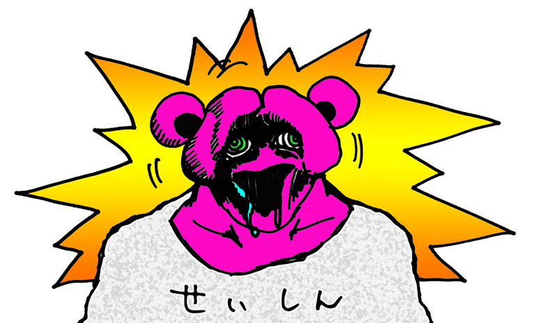
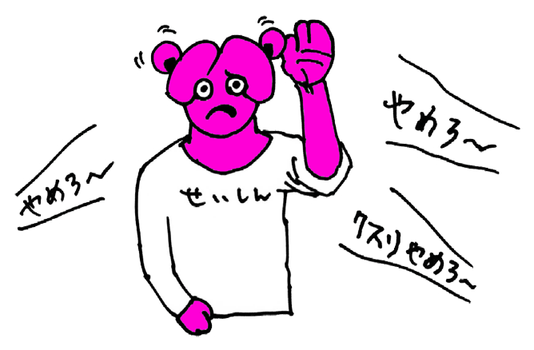

ある晴れた日の昼下がり、
躁鬱くんはいつものようにちょっぴり違法なおクスリを愉しんでいました。

目の前を虹色の閃光が駆け巡り、
頭の中では声無き賛美歌が鳴り響く…。
躁鬱くんの身体と精神は一切の殻から解き放たれ一つとなり、
幸福のトンネルを光速で疾り抜け森羅万象と一体化していきます。
快楽の海へと身を委ねた躁鬱くんの意識が精神宇宙で遊泳を愉しんでいると、
なにやらノイズのような不快な声が聞こえてきました。
「クスリやめろ…クスリやめろ…クスリやめろ…」

それは近所でも有名なお節介軍団、
『善の権化・やる偽善の会』のメンバーたちが
躁鬱くんを止めようとする声だったのです。
躁鬱くんが自らの精神宇宙を護るための闘いが、
今まさに幕を開けたのです―――。